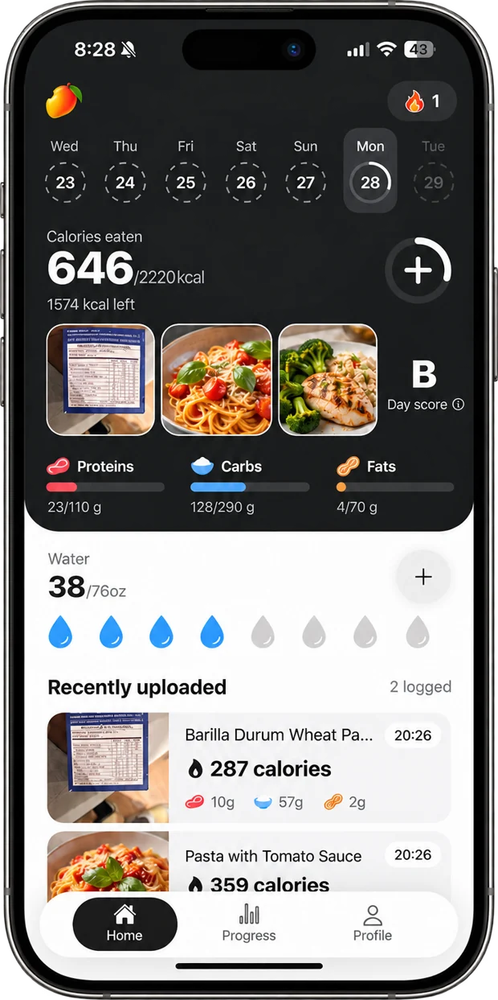
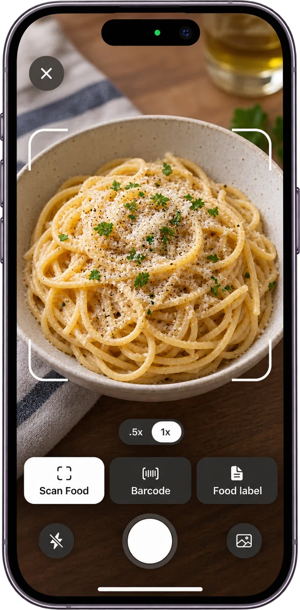
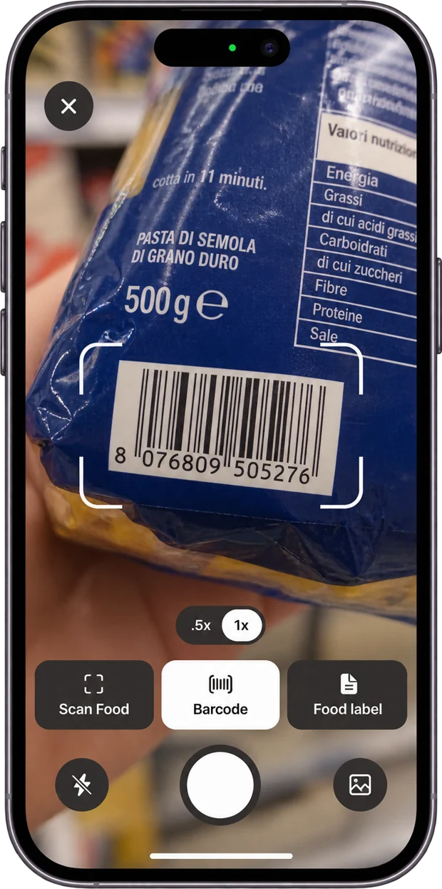
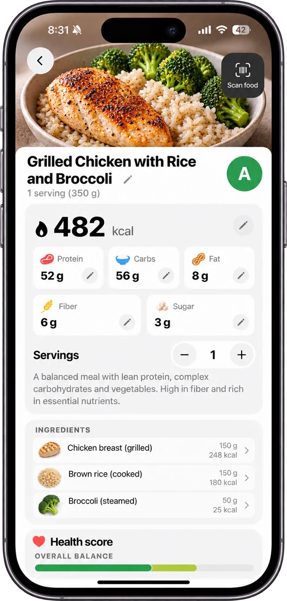
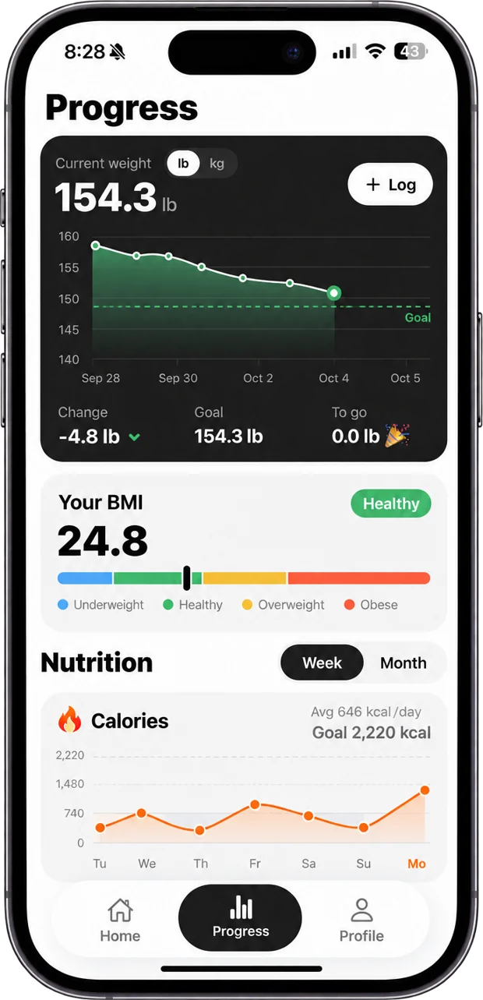
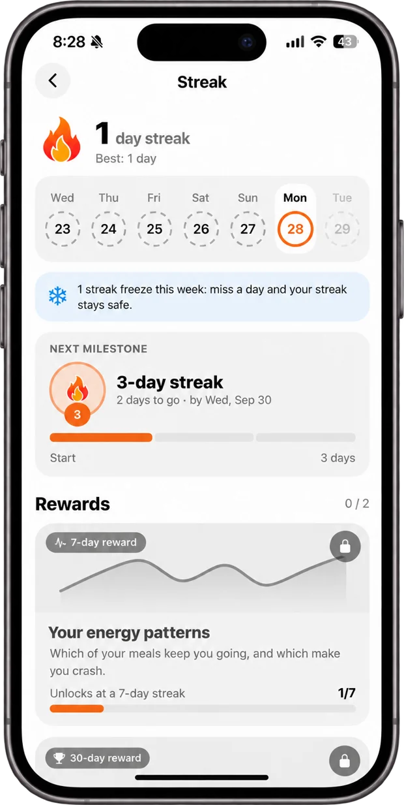

Snap your meal.
Know how you’ll feel.
Calories and macros from a single photo, plus your energy, blood sugar spike and crash risk, before you take a bite.
Free to download · iPhone
Log it your way

Calories tell you what you ate.
Afterbite tells you what it’ll do.
Every scan comes with the numbers you need and a prediction of your next three hours: steady energy, or a crash on the way.
Snap it, done
Point your camera at your plate. Afterbite recognizes every ingredient, estimates the portion and logs calories and macros in seconds. Not near your food? Describe it instead.
- Every ingredient, weighed and counted
- Hidden calories like oil and sauces
- Pick a photo from your library

Barcodes and food labels
Packaged food? Scan the barcode, or snap the nutrition label for exact numbers per serving. Millions of products, from your supermarket shelf.
- Instant barcode lookup
- Reads any nutrition label
- Search everyday foods and brands

How you’ll feel after
Every meal gets a grade, a health score and a forecast of your energy, blood sugar spike and crash risk. Then a few easy swaps to feel steadier and fuller for longer.
- A to E grade and 0–100 health score
- Energy curve and crash risk
- Smarter swaps for this exact meal

Progress you can see
Your weight trend toward your goal, your BMI, and your calories and macros by week or month. Workouts from Apple Health count toward your day automatically.
- Weight chart and goal tracking
- Weekly and monthly nutrition
- Works with Apple Health

Streaks that keep you going
Log a meal a day to grow your streak. Hit milestones to unlock rewards like your personal energy patterns, and a weekly streak freeze keeps a busy day from breaking it.
- Daily streak and milestones
- Rewards that unlock insights
- Water tracking and gentle reminders

Three steps to eating better
Answer a few quick questions about your body and your goal. Afterbite builds your daily calorie and macro plan in about a minute.
Take a photo, scan a barcode or snap a label. You get calories, macros and how the meal will make you feel, in seconds.
Try the suggested swaps, watch your energy steady out, and see your progress and your streak grow day by day.
Questions? We’ve got you.
How accurate are the calories?
Afterbite recognizes each ingredient and estimates the portion from the photo, including hidden calories like cooking oil and sauces. You can change the servings or edit any value, and barcodes and nutrition labels give you the exact numbers.
How does it know how I’ll feel?
It looks at what drives your energy after eating: carbs and sugar, fiber, protein, fat and portion size. From that it predicts your energy curve, blood sugar spike and crash risk for a typical healthy adult. It’s a wellness guide, not medical advice.
Do I need an account?
No. There’s no sign-up. Your log stays on your iPhone, and meal photos are analyzed without being stored on our servers.
Does it work with Apple Health?
Yes. Workouts from Apple Health count toward your day, and the meals and weight you log are saved to Health.
How do I cancel my subscription?
Open the Settings app on your iPhone, tap your name, then Subscriptions, and choose Afterbite. You can cancel anytime.
Still have a question?
Contact us